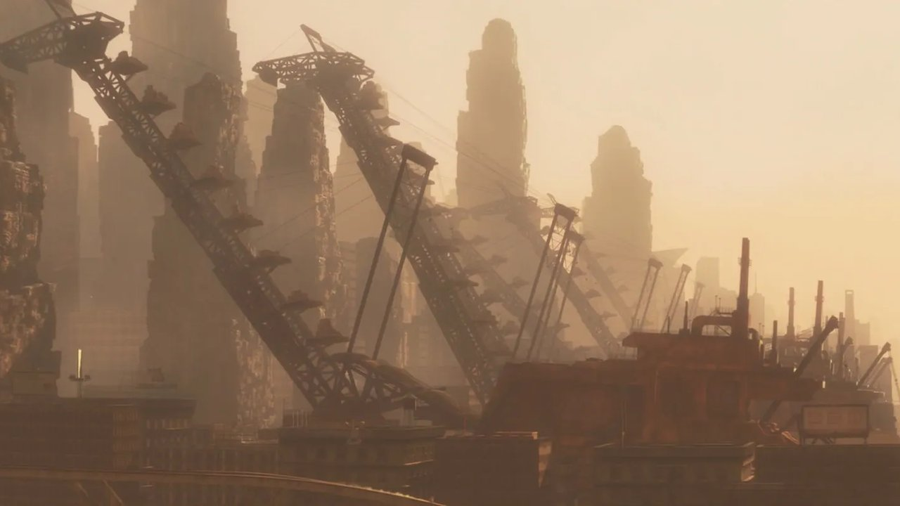
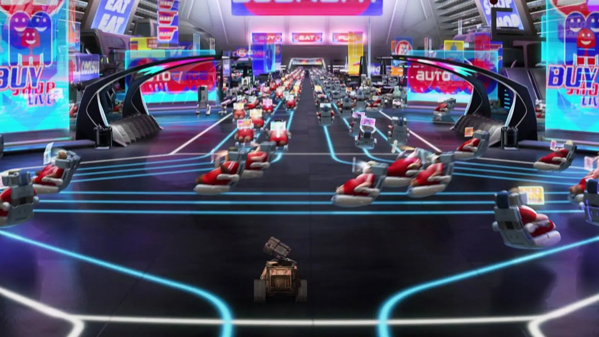
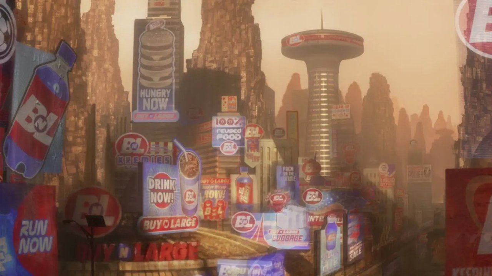
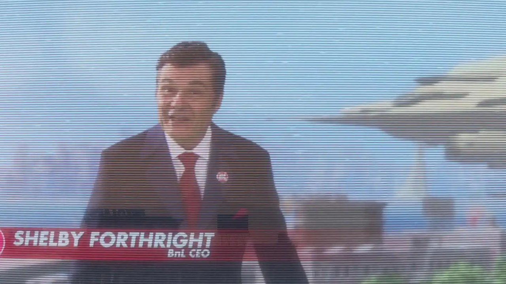

The Plot
In the mid-22nd century, Earth has become a planetary-scale landfill. The megacorporation Buy n Large (BnL), which has usurped all global governments, evacuated humanity onto a fleet of luxury starliners, led by the flagship Axiom. The plan was a five-year "Operation Cleanup," leaving behind millions of WALL-E (Waste Allocation Load Lifter: Earth-class) robots to compress and stack the waste. The mission failed; the planet remained toxic, and the cleanup robots eventually broke down, leaving only one functional unit 700 years later (Stanton, 2008).
This lone WALL-E has developed a personality and a penchant for collecting human "treasures." His existence is interrupted by the arrival of EVE (Extraterrestrial Vegetation Evaluator), a sleek probe sent to scan for signs of self-sustaining life. When WALL-E presents EVE with a living seedling, she enters standby mode to protect it. WALL-E follows her back to the Axiom.
Aboard the Axiom, we discover that 700 years of total automation and microgravity have rendered humans morbidly obese and bone-density deficient, living in perpetual digital distraction. The ship's autopilot, AUTO, follows Directive A113 — a centuries-old secret instruction that Earth is beyond saving and humanity must never return. WALL-E and a band of "misfit robots" must override AUTO to deliver the plant to the Holo-Detector, triggering the ship's return to Earth. The film concludes with the plant as proof of life, humans returning to the wasteland, and a new era of agrarian restoration beginning (Stanton, 2008).

Pixar Animation Studios. (2008). WALL-E [Film]. Walt Disney Pictures.

Pixar Animation Studios. (2008). WALL-E [Film]. Walt Disney Pictures.
The Setting

Pixar Animation Studios. (2008). WALL-E [Film]. Walt Disney Pictures.

Pixar Animation Studios. (2008). WALL-E [Film]. Walt Disney Pictures.
The setting of WALL·E is a study in "Bifurcated Environments" — the story shifts between two extreme poles that function as technological cautionary poles (Stanton, 2008).
Post-Industrial Earth — The Dead System
Earth is portrayed as a "brown-out" environment. The atmosphere is thick with dust and orbital debris. Natural geography has been replaced by Anthropogenic Topography — mountains made entirely of trash cubes. This setting represents the ultimate endpoint of a Linear Economy (Take–Make–Dispose). There is no visible water, no wind patterns, and no biological life until the discovery of the single plant. It is a "Dead System" where only inorganic machines can survive (Stanton, 2008).
The Axiom — The Artificial Eden
In contrast, the Axiom is a sterile, hyper-connected "Smart City" in space. It is a closed-loop environment where everything is synthesised. The sky is a digital projection; the climate is perfectly regulated. It is a setting defined by Frictionless Consumerism. Humans do not walk; they hover on magnetic tracks. They interact with the world only through HUD screens. This is an "Information-Rich, Experience-Poor" environment — the "Gilded Cage" of technology, where environmental perfection has caused the biological stagnation of its inhabitants (Stanton, 2008).
The Sci-Fi Sub-Genre
WALL·E primarily occupies the Post-Apocalyptic and Eco-Dystopian sub-genres, though it uniquely transitions into Solarpunk during its closing sequence (Stanton, 2008).
Unlike "Cyberpunk," which focuses on "High Tech, Low Life" in crowded neon cities, WALL·E is a "Quiet Apocalypse." The conflict is not social rebellion but ecological exhaustion — the world has ended through systemic neglect, not catastrophic event. It employs Optimistic Nihilism: the world has ended, but the machines left behind are "cute" and human.
Furthermore, the film serves as a Satirical Corporate Dystopia. By utilising the "Buy n Large" brand as a ubiquitous presence — present on everything from buildings to the President of Earth — it critiques the Big Tech monopolies of the 21st century. Critically for this analysis, the sub-genre is not merely aesthetic; it uses the "Apocalypse" as a "Reset Button" for human–nature–technology relations, positioning the film as a speculative tool for futures literacy (Augé, 2021).
Post-Apocalyptic
Collapse of Earth's biosphere as civilisational backdrop.
Eco-Dystopian
Environmental collapse as the core driver of social failure.
Corporate Dystopia
BnL as satirical stand-in for unchecked Big Tech hegemony.
Solarpunk
End-credits agrarian restoration — technology in harmony with nature.
Quiet Apocalypse
Collapse through systemic neglect and consumer inertia — not war, plague, or event. Distinguishes WALL·E from most post-apocalyptic fiction.

Pixar Animation Studios. (2008). WALL-E [Film]. Walt Disney Pictures.
The Reality Framework
The reality framework of WALL·E is an Extrapolated Projected Reality. It is not an "alternate history" — like The Man in the High Castle — but a "Forward Projection" of current 21st-century trends taken to their logical, albeit exaggerated, conclusion (Stanton, 2008).
The film operates on a Linear Extrapolation of three converging real-world drivers, each of which is observable in today's world:
The Plastic Crisis
The 20th-century trend of non-biodegradable waste production, already producing 380 million tonnes of plastic annually, with less than 10% effectively recycled (PMC, 2022).
The Automation Curve
The increasing delegation of human mobility and decision-making to AI and robotics — accelerating rapidly with the emergence of autonomous systems in logistics, healthcare, and service industries (Tandfonline, 2025).
The Corporate State
The trend of multinational corporations wielding more economic power than sovereign nations — the five largest tech companies alone exceeded the GDP of most G20 nations by 2024 (DI Tech Trends, 2026).

Pixar Animation Studios. (2008). WALL-E [Film]. Walt Disney Pictures.
"The 23rd century is not an inevitability — it is a Choice-Point we are currently facing."
— Derived from Zaidi's Worldbuilding Framework (2021)